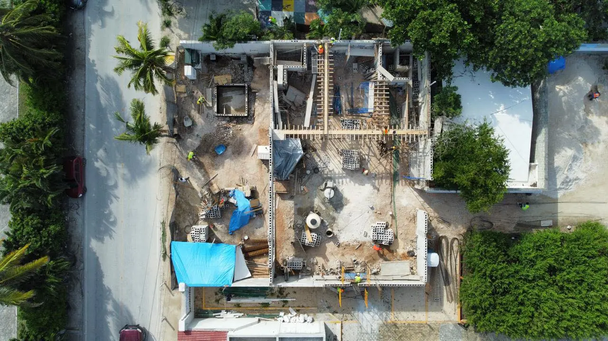

Une rangée de boutiques sur une avenue passante, une galerie de quartier, un immeuble de bureaux ou une concession automobile : chacun a son prix au m². Choisissez le type, la surface, les niveaux et le parking et obtenez une fourchette 2026 pour votre zone.

Boutiques, galerie, bureaux ou showroom diffèrent en structure et finitions.
Chaque niveau ajoute poteaux, escaliers, ascenseurs et protection incendie.
Le règlement fixe les places au m² ; elles pèsent sur le terrain et le budget.
Îles et côte premium coûtent plus que les avenues urbaines.
Les charges commerciales exigent souvent une augmentation CFE ou un transformateur.
La visibilité fait le loyer ; la façade mérite un budget.
Fourchette indicative 2026 hors terrain, taxes et TVA. Une visite et l'étude de sol fixent le prix final.
Recevoir un devis détailléStructure, enveloppe, lots techniques de base, parties communes et extérieurs plus parking extérieur. Hors terrain, aménagements preneurs, taxes, raccordements et TVA.
| Zone | Projet type (MXN) |
|---|---|
| Costa Mujeres | $6 420 000 – $9 720 000 |
| Isla Mujeres | $6 741 000 – $10 206 000 |
| Holbox | $6 955 000 – $10 530 000 |
| Cancún | $5 350 000 – $8 100 000 |
| Puerto Morelos | $5 832 000 – $8 829 000 |
| Playa del Carmen | $5 564 000 – $8 424 000 |
| Cozumel | $6 527 000 – $9 882 000 |
| Puerto Aventuras | $5 939 000 – $8 991 000 |
| Xpu-Há | $6 794 000 – $10 287 000 |
| Akumal | $6 260 000 – $9 477 000 |
| Chan Chemuyil | $6 152 000 – $9 315 000 |
| Tulum | $6 045 000 – $9 153 000 |
| Felipe Carrillo Puerto | $4 815 000 – $7 290 000 |
| Bacalar | $5 190 000 – $7 857 000 |
| Mahahual | $5 992 000 – $9 072 000 |
| Chetumal | $4 922 000 – $7 452 000 |
Pages utiles : Calculateur de coût d'hôtel · Calculateur de coût de station-service · Calculateur de coût de clinique · Calculateur maison · Calculateur de coût d'entrepôt
Faisabilité, programme et devis. Réponse en 2 minutes.
Demander un devis sur WhatsAppVotre avis aide d'autres propriétaires à décider, et nous aide à progresser.
Rédiger un avisVoir les avis Google